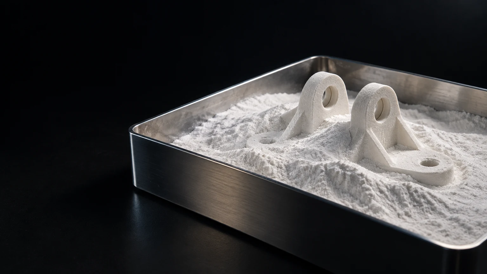
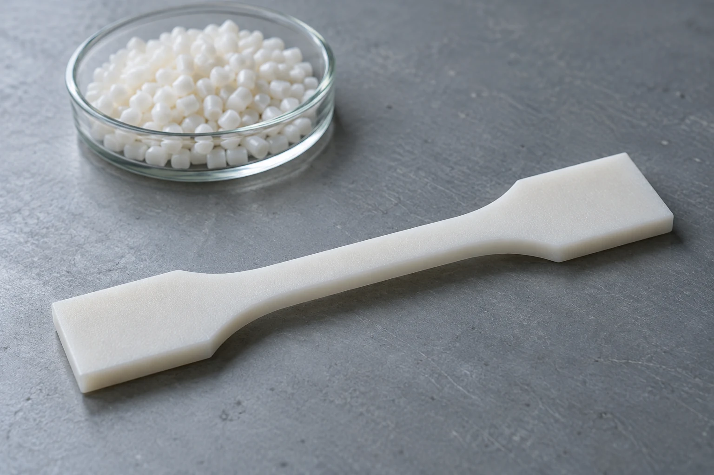
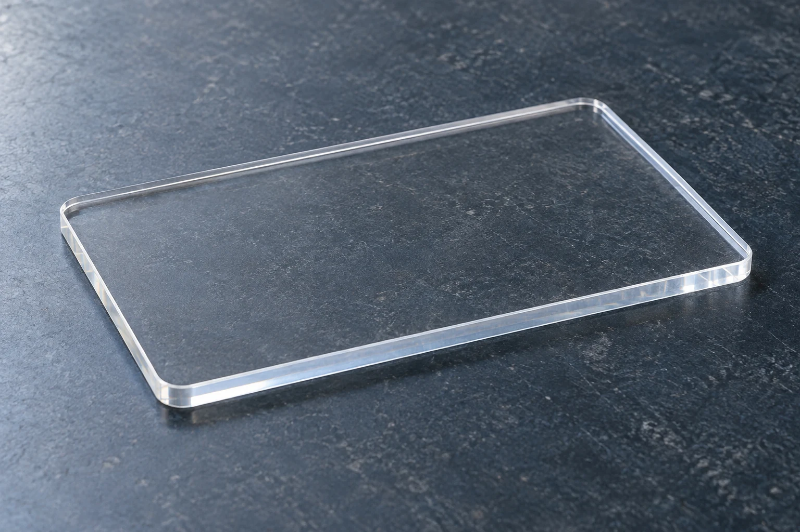
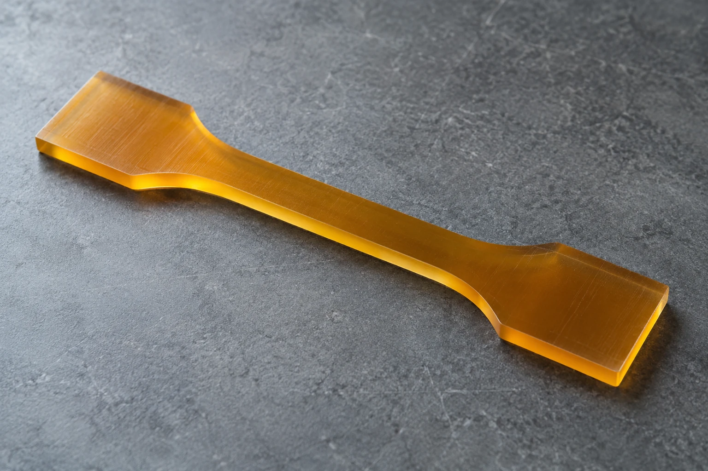
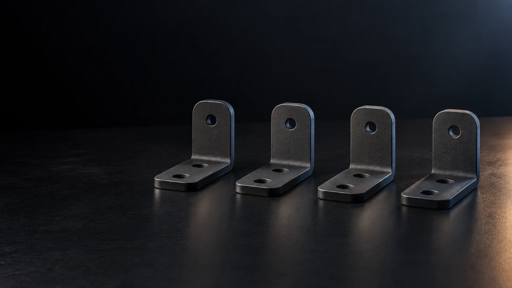

PROCESO ADITIVO
FFF / FDM
Impresión por filamento fundido: rápida y económica para prototipos y piezas funcionales en plásticos técnicos.
Evaluar aplicación ↗Elegimos la tecnología y el material según lo que debe hacer tu pieza, y seguimos un proceso claro de principio a fin.
Te recomendamos la tecnología adecuada después de revisar tu pieza.
Impresión por filamento fundido: rápida y económica para prototipos y piezas funcionales en plásticos técnicos.
Evaluar aplicación ↗
Sinterizado láser de polvo de poliamida, bajo pedido: piezas resistentes y geometrías complejas sin soportes.
Evaluar aplicación ↗
Diseño CAD pensado para imprimirse bien: espesores, orientación y encajes revisados antes de fabricar.
Evaluar aplicación ↗
Digitalizamos piezas y comparamos sus medidas con el CAD o el plano.
Evaluar aplicación ↗Explora por familia. El grado, el proceso y las condiciones de uso determinan qué opción merece evaluarse.

Poliamida versátil de uso frecuente en sistemas de fabricación aditiva industrial.
El material y el proceso se revisan según la función, las condiciones de uso y los requisitos de tu pieza.
Preparar consultaMateriales de ingeniería con comportamiento que depende de humedad, formulación y proceso.
El material y el proceso se revisan según la función, las condiciones de uso y los requisitos de tu pieza.
Preparar consulta
Composites para aplicaciones con requerimientos de rigidez y estabilidad dimensional.
El material y el proceso se revisan según la función, las condiciones de uso y los requisitos de tu pieza.
Preparar consultaCompuestos reforzados para determinadas aplicaciones mecánicas y térmicas.
El material y el proceso se revisan según la función, las condiciones de uso y los requisitos de tu pieza.
Preparar consulta
Termoplástico de ingeniería; requiere proceso y condiciones de fabricación adecuados.
El material y el proceso se revisan según la función, las condiciones de uso y los requisitos de tu pieza.
Preparar consulta
Alternativa para determinados componentes donde importa el comportamiento en exterior.
El material y el proceso se revisan según la función, las condiciones de uso y los requisitos de tu pieza.
Preparar consulta
Familia de materiales de alto desempeño con requisitos exigentes de procesamiento.
El material y el proceso se revisan según la función, las condiciones de uso y los requisitos de tu pieza.
Preparar consultaTermoplástico de la familia PAEK utilizado en aplicaciones industriales exigentes.
El material y el proceso se revisan según la función, las condiciones de uso y los requisitos de tu pieza.
Preparar consultaAdaptamos cada paso al tipo de pieza y a lo que necesitas.

Entendemos qué debe hacer la pieza, sus límites y cómo sabremos que el resultado es bueno.
Comprobamos que la pieza se puede fabricar con el material y el proceso adecuados, y acordamos la confidencialidad.

Modelamos la pieza en CAD, la revisamos contigo y preparamos los archivos para fabricar.
Imprimimos prototipos y los ajustamos según lo que vemos en cada prueba.
Medimos la pieza y hacemos las pruebas acordadas.
Fabricamos las unidades acordadas y te entregamos las piezas con su documentación.
